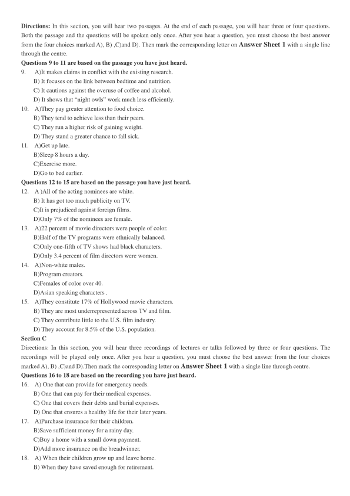
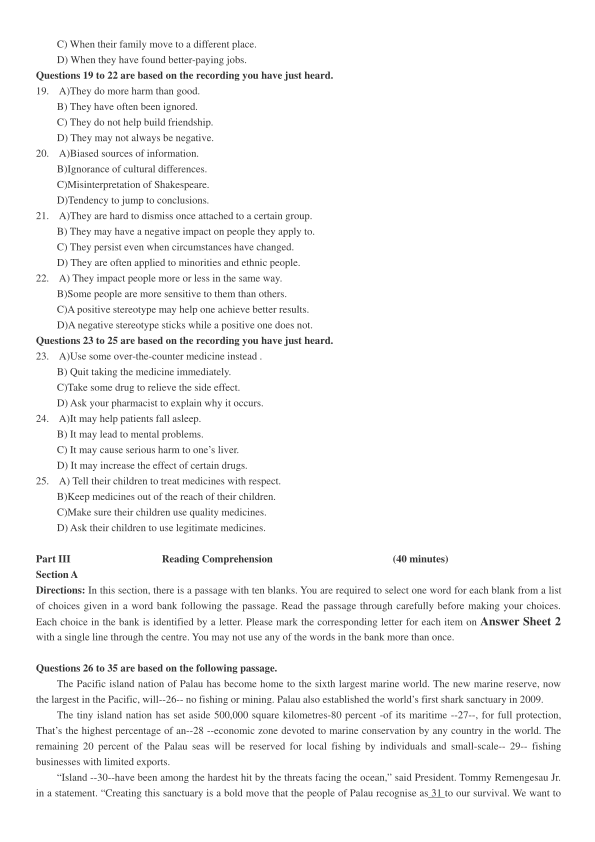
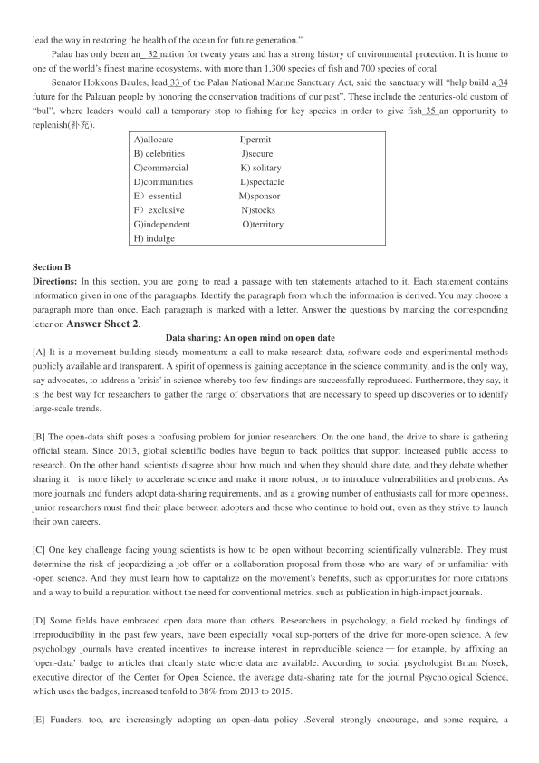
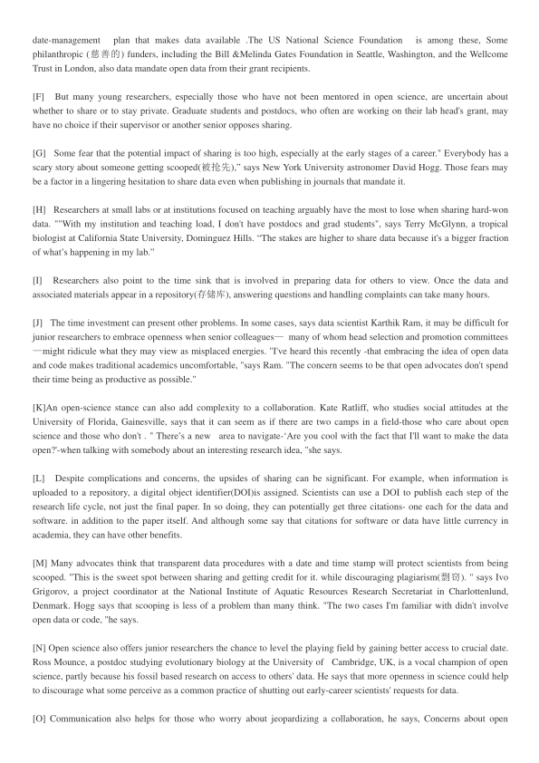
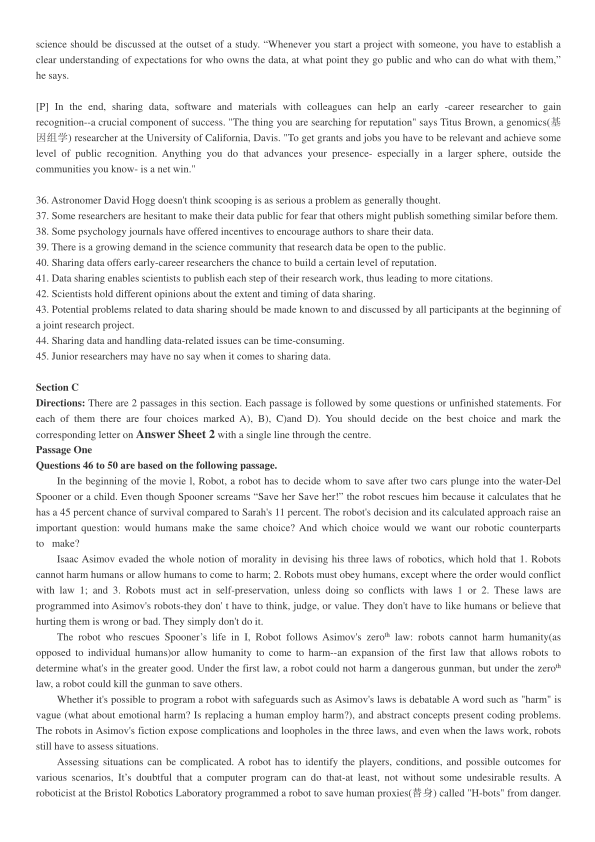
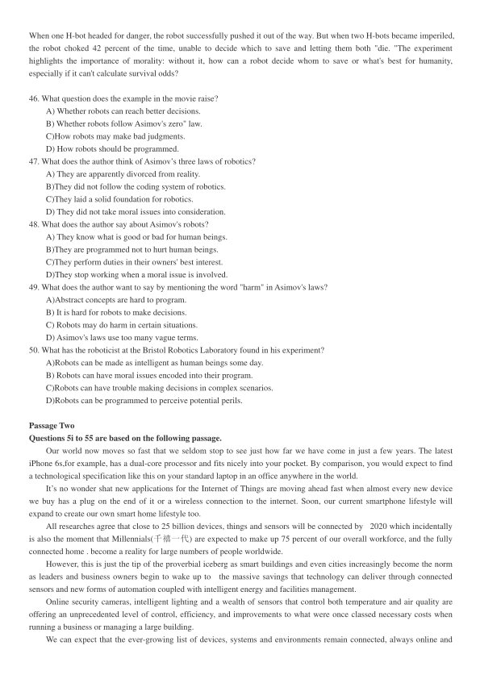
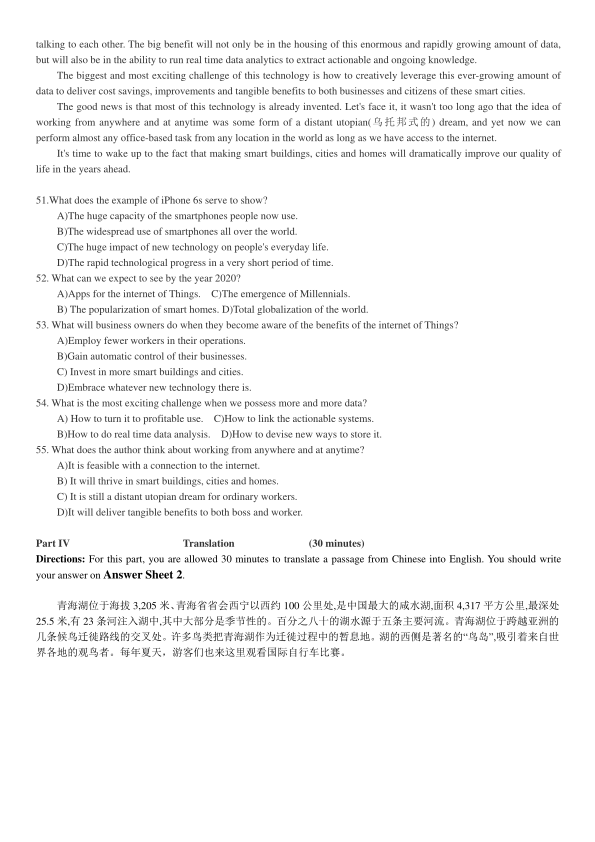

第 1 / 8 页

2017 年12 月大学英语六级考试真题（第2 套）
Part I
Writing
(30 minutes)
（请于正式开考后半小时内完成该部分，之后将进行听力考试）
Directions: For this part, you are allowed 30 minutes to write an essay commenting on the saying "Seek to understand
others, and you will be understood " You can cite examples to illustrate your views. You should write at least 150 words
but no more than 200.
Part II
Listening comprehension
(30 minutes)
Section A
Directions: In this section, you will hear two long conversations. At the end of each conversation, you will hear four
questions. Both the conversation and the questions will be spoken only once. After you hear a question, you must choose the
best answer from the four choices marked A), B) ,C)and D). Then mark the corresponding letter on Answer Sheet 1 with
a single line through the centre.
Questions1 to 4 are based on the conversation you have just heard.
1.
A)Say a few words to thank the speaker.
B)Introduce the speaker to the audience.
C) Give a lecture on the history of the town.
D)Host a talk on how to give a good speech.
2.
A)He was the founder of the local history society.
B) He has worked with Miss Bligh for 20 years.
C) He has published a book on public speaking.
D) He joined the local history society when young.
3.
A) She was obviously better at talking than writing.
B) She had a good knowledge of the town’s history.
C).Her speech was so funny as to amuse the audience.
D).Her ancestors came to the town in the 18th century
4 .
A) He read exactly what was written in his notes.
B) He kept forgetting what he was going to say.
C) He made an embarrassing remark.
D) He was too nervous to speak up.
Questions 5 to 8 are based on the conversation you have just heard.
5.
A)What their retailers demand.
B)What their rivals are doing.
C)How they are going to beat their rivals.
D)How dramatically the market is changing.
6.
A)They should be taken seriously.
B)They are rapidly catching up.
C)How they are going to beat their rivals.
D)How dramatically the market is changing.
7.
A)She had given it to Tom.
B)It simply made her go frantic.
C)She had not seen it yet.
D)It was not much of a big concern.
8.
A)Restructuring the whole company.
B)Employing more forwarding agents.
C)Promoting cooperation with Jayal Motors.
D)Exporting their motorbikes to Indonesia.
Section B
查看 / 复制本页文字
2017 年12 月大学英语六级考试真题（第2 套） Part I Writing (30 minutes) （请于正式开考后半小时内完成该部分，之后将进行听力考试） Directions: For this part, you are allowed 30 minutes to write an essay commenting on the saying "Seek to understand others, and you will be understood " You can cite examples to illustrate your views. You should write at least 150 words but no more than 200. Part II Listening comprehension (30 minutes) Section A Directions: In this section, you will hear two long conversations. At the end of each conversation, you will hear four questions. Both the conversation and the questions will be spoken only once. After you hear a question, you must choose the best answer from the four choices marked A), B) ,C)and D). Then mark the corresponding letter on Answer Sheet 1 with a single line through the centre. Questions1 to 4 are based on the conversation you have just heard. 1. A)Say a few words to thank the speaker. B)Introduce the speaker to the audience. C) Give a lecture on the history of the town. D)Host a talk on how to give a good speech. 2. A)He was the founder of the local history society. B) He has worked with Miss Bligh for 20 years. C) He has published a book on public speaking. D) He joined the local history society when young. 3. A) She was obviously better at talking than writing. B) She had a good knowledge of the town’s history. C).Her speech was so funny as to amuse the audience. D).Her ancestors came to the town in the 18th century 4 . A) He read exactly what was written in his notes. B) He kept forgetting what he was going to say. C) He made an embarrassing remark. D) He was too nervous to speak up. Questions 5 to 8 are based on the conversation you have just heard. 5. A)What their retailers demand. B)What their rivals are doing. C)How they are going to beat their rivals. D)How dramatically the market is changing. 6. A)They should be taken seriously. B)They are rapidly catching up. C)How they are going to beat their rivals. D)How dramatically the market is changing. 7. A)She had given it to Tom. B)It simply made her go frantic. C)She had not seen it yet. D)It was not much of a big concern. 8. A)Restructuring the whole company. B)Employing more forwarding agents. C)Promoting cooperation with Jayal Motors. D)Exporting their motorbikes to Indonesia. Section B
第 2 / 8 页

Directions: In this section, you will hear two passages. At the end of each passage, you will hear three or four questions.
Both the passage and the questions will be spoken only once. After you hear a question, you must choose the best answer
from the four choices marked A), B) ,C)and D). Then mark the corresponding letter on Answer Sheet 1 with a single line
through the centre.
Questions 9 to 11 are based on the passage you have just heard.
9.
A)It makes claims in conflict with the existing research.
B) It focuses on the link between bedtime and nutrition.
C) It cautions against the overuse of coffee and alcohol.
D) It shows that “night owls” work much less efficiently.
10.
A)They pay greater attention to food choice.
B) They tend to achieve less than their peers.
C) They run a higher risk of gaining weight.
D) They stand a greater chance to fall sick.
11.
A)Get up late.
B)Sleep 8 hours a day.
C)Exercise more.
D)Go to bed earlier.
Questions 12 to 15 are based on the passage you have just heard.
12.
A )All of the acting nominees are white.
B) It has got too much publicity on TV.
C)It is prejudiced against foreign films.
D)Only 7% of the nominees are female.
13.
A)22 percent of movie directors were people of color.
B)Half of the TV programs were ethnically balanced.
C)Only one-fifth of TV shows had black characters.
D)Only 3.4 percent of film directors were women.
14.
A)Non-white males.
B)Program creators.
C)Females of color over 40.
D)Asian speaking characters .
15.
A)They constitute 17% of Hollywood movie characters.
B) They are most underrepresented across TV and film.
C) They contribute little to the U.S. film industry.
D) They account for 8.5% of the U.S. population.
Section C
Directions: In this section, you will hear three recordings of lectures or talks followed by three or four questions. The
recordings will be played only once. After you hear a question, you must choose the best answer from the four choices
marked A), B) ,C)and D).Then mark the corresponding letter on Answer Sheet 1 with a single line through centre.
Questions 16 to 18 are based on the recording you have just heard.
16.
A) One that can provide for emergency needs.
B) One that can pay for their medical expenses.
C) One that covers their debts and burial expenses.
D) One that ensures a healthy life for their later years.
17.
A)Purchase insurance for their children.
B)Save sufficient money for a rainy day.
C)Buy a home with a small down payment.
D)Add more insurance on the breadwinner.
18.
A) When their children grow up and leave home.
B) When they have saved enough for retirement.
查看 / 复制本页文字
Directions: In this section, you will hear two passages. At the end of each passage, you will hear three or four questions. Both the passage and the questions will be spoken only once. After you hear a question, you must choose the best answer from the four choices marked A), B) ,C)and D). Then mark the corresponding letter on Answer Sheet 1 with a single line through the centre. Questions 9 to 11 are based on the passage you have just heard. 9. A)It makes claims in conflict with the existing research. B) It focuses on the link between bedtime and nutrition. C) It cautions against the overuse of coffee and alcohol. D) It shows that “night owls” work much less efficiently. 10. A)They pay greater attention to food choice. B) They tend to achieve less than their peers. C) They run a higher risk of gaining weight. D) They stand a greater chance to fall sick. 11. A)Get up late. B)Sleep 8 hours a day. C)Exercise more. D)Go to bed earlier. Questions 12 to 15 are based on the passage you have just heard. 12. A )All of the acting nominees are white. B) It has got too much publicity on TV. C)It is prejudiced against foreign films. D)Only 7% of the nominees are female. 13. A)22 percent of movie directors were people of color. B)Half of the TV programs were ethnically balanced. C)Only one-fifth of TV shows had black characters. D)Only 3.4 percent of film directors were women. 14. A)Non-white males. B)Program creators. C)Females of color over 40. D)Asian speaking characters . 15. A)They constitute 17% of Hollywood movie characters. B) They are most underrepresented across TV and film. C) They contribute little to the U.S. film industry. D) They account for 8.5% of the U.S. population. Section C Directions: In this section, you will hear three recordings of lectures or talks followed by three or four questions. The recordings will be played only once. After you hear a question, you must choose the best answer from the four choices marked A), B) ,C)and D).Then mark the corresponding letter on Answer Sheet 1 with a single line through centre. Questions 16 to 18 are based on the recording you have just heard. 16. A) One that can provide for emergency needs. B) One that can pay for their medical expenses. C) One that covers their debts and burial expenses. D) One that ensures a healthy life for their later years. 17. A)Purchase insurance for their children. B)Save sufficient money for a rainy day. C)Buy a home with a small down payment. D)Add more insurance on the breadwinner. 18. A) When their children grow up and leave home. B) When they have saved enough for retirement.
第 3 / 8 页

C) When their family move to a different place.
D) When they have found better-paying jobs.
Questions 19 to 22 are based on the recording you have just heard.
19.
A)They do more harm than good.
B) They have often been ignored.
C) They do not help build friendship.
D) They may not always be negative.
20.
A)Biased sources of information.
B)Ignorance of cultural differences.
C)Misinterpretation of Shakespeare.
D)Tendency to jump to conclusions.
21.
A)They are hard to dismiss once attached to a certain group.
B) They may have a negative impact on people they apply to.
C) They persist even when circumstances have changed.
D) They are often applied to minorities and ethnic people.
22.
A) They impact people more or less in the same way.
B)Some people are more sensitive to them than others.
C)A positive stereotype may help one achieve better results.
D)A negative stereotype sticks while a positive one does not.
Questions 23 to 25 are based on the recording you have just heard.
23.
A)Use some over-the-counter medicine instead .
B) Quit taking the medicine immediately.
C)Take some drug to relieve the side effect.
D) Ask your pharmacist to explain why it occurs.
24.
A)It may help patients fall asleep.
B) It may lead to mental problems.
C) It may cause serious harm to one’s liver.
D) It may increase the effect of certain drugs.
25.
A) Tell their children to treat medicines with respect.
B)Keep medicines out of the reach of their children.
C)Make sure their children use quality medicines.
D) Ask their children to use legitimate medicines.
Part III
Reading Comprehension
(40 minutes)
Section A
Directions: In this section, there is a passage with ten blanks. You are required to select one word for each blank from a list
of choices given in a word bank following the passage. Read the passage through carefully before making your choices.
Each choice in the bank is identified by a letter. Please mark the corresponding letter for each item on Answer Sheet 2
with a single line through the centre. You may not use any of the words in the bank more than once.
Questions 26 to 35 are based on the following passage.
The Pacific island nation of Palau has become home to the sixth largest marine world. The new marine reserve, now
the largest in the Pacific, will--26-- no fishing or mining. Palau also established the world’s first shark sanctuary in 2009.
The tiny island nation has set aside 500,000 square kilometres-80 percent -of its maritime --27--, for full protection,
That’s the highest percentage of an--28 --economic zone devoted to marine conservation by any country in the world. The
remaining 20 percent of the Palau seas will be reserved for local fishing by individuals and small-scale-- 29-- fishing
businesses with limited exports.
“Island --30--have been among the hardest hit by the threats facing the ocean,” said President. Tommy Remengesau Jr.
in a statement. “Creating this sanctuary is a bold move that the people of Palau recognise as 31 to our survival. We want to
查看 / 复制本页文字
C) When their family move to a different place. D) When they have found better-paying jobs. Questions 19 to 22 are based on the recording you have just heard. 19. A)They do more harm than good. B) They have often been ignored. C) They do not help build friendship. D) They may not always be negative. 20. A)Biased sources of information. B)Ignorance of cultural differences. C)Misinterpretation of Shakespeare. D)Tendency to jump to conclusions. 21. A)They are hard to dismiss once attached to a certain group. B) They may have a negative impact on people they apply to. C) They persist even when circumstances have changed. D) They are often applied to minorities and ethnic people. 22. A) They impact people more or less in the same way. B)Some people are more sensitive to them than others. C)A positive stereotype may help one achieve better results. D)A negative stereotype sticks while a positive one does not. Questions 23 to 25 are based on the recording you have just heard. 23. A)Use some over-the-counter medicine instead . B) Quit taking the medicine immediately. C)Take some drug to relieve the side effect. D) Ask your pharmacist to explain why it occurs. 24. A)It may help patients fall asleep. B) It may lead to mental problems. C) It may cause serious harm to one’s liver. D) It may increase the effect of certain drugs. 25. A) Tell their children to treat medicines with respect. B)Keep medicines out of the reach of their children. C)Make sure their children use quality medicines. D) Ask their children to use legitimate medicines. Part III Reading Comprehension (40 minutes) Section A Directions: In this section, there is a passage with ten blanks. You are required to select one word for each blank from a list of choices given in a word bank following the passage. Read the passage through carefully before making your choices. Each choice in the bank is identified by a letter. Please mark the corresponding letter for each item on Answer Sheet 2 with a single line through the centre. You may not use any of the words in the bank more than once. Questions 26 to 35 are based on the following passage. The Pacific island nation of Palau has become home to the sixth largest marine world. The new marine reserve, now the largest in the Pacific, will--26-- no fishing or mining. Palau also established the world’s first shark sanctuary in 2009. The tiny island nation has set aside 500,000 square kilometres-80 percent -of its maritime --27--, for full protection, That’s the highest percentage of an--28 --economic zone devoted to marine conservation by any country in the world. The remaining 20 percent of the Palau seas will be reserved for local fishing by individuals and small-scale-- 29-- fishing businesses with limited exports. “Island --30--have been among the hardest hit by the threats facing the ocean,” said President. Tommy Remengesau Jr. in a statement. “Creating this sanctuary is a bold move that the people of Palau recognise as 31 to our survival. We want to
第 4 / 8 页

lead the way in restoring the health of the ocean for future generation.”
Palau has only been an_ 32 nation for twenty years and has a strong history of environmental protection. It is home to
one of the world’s finest marine ecosystems, with more than 1,300 species of fish and 700 species of coral.
Senator Hokkons Baules, lead 33 of the Palau National Marine Sanctuary Act, said the sanctuary will “help build a 34
future for the Palauan people by honoring the conservation traditions of our past”. These include the centuries-old custom of
“bul”, where leaders would call a temporary stop to fishing for key species in order to give fish 35 an opportunity to
replenish(补充).
A)allocate
I)permit
B) celebrities
J)secure
C)commercial
K) solitary
D)communities
L)spectacle
E）essential
M)sponsor
F）exclusive
N)stocks
G)independent
O)territory
H) indulge
Section B
Directions: In this section, you are going to read a passage with ten statements attached to it. Each statement contains
information given in one of the paragraphs. Identify the paragraph from which the information is derived. You may choose a
paragraph more than once. Each paragraph is marked with a letter. Answer the questions by marking the corresponding
letter on Answer Sheet 2.
Data sharing: An open mind on open date
[A] It is a movement building steady momentum: a call to make research data, software code and experimental methods
publicly available and transparent. A spirit of openness is gaining acceptance in the science community, and is the only way,
say advocates, to address a 'crisis' in science whereby too few findings are successfully reproduced. Furthermore, they say, it
is the best way for researchers to gather the range of observations that are necessary to speed up discoveries or to identify
large-scale trends.
[B] The open-data shift poses a confusing problem for junior researchers. On the one hand, the drive to share is gathering
official steam. Since 2013, global scientific bodies have begun to back politics that support increased public access to
research. On the other hand, scientists disagree about how much and when they should share date, and they debate whether
sharing it
is more likely to accelerate science and make it more robust, or to introduce vulnerabilities and problems. As
more journals and funders adopt data-sharing requirements, and as a growing number of enthusiasts call for more openness,
junior researchers must find their place between adopters and those who continue to hold out, even as they strive to launch
their own careers.
[C] One key challenge facing young scientists is how to be open without becoming scientifically vulnerable. They must
determine the risk of jeopardizing a job offer or a collaboration proposal from those who are wary of-or unfamiliar with
-open science. And they must learn how to capitalize on the movement's benefits, such as opportunities for more citations
and a way to build a reputation without the need for conventional metrics, such as publication in high-impact journals.
[D] Some fields have embraced open data more than others. Researchers in psychology, a field rocked by findings of
irreproducibility in the past few years, have been especially vocal sup-porters of the drive for more-open science. A few
psychology journals have created incentives to increase interest in reproducible science — for example, by affixing an
‘open-data’ badge to articles that clearly state where data are available. According to social psychologist Brian Nosek,
executive director of the Center for Open Science, the average data-sharing rate for the journal Psychological Science,
which uses the badges, increased tenfold to 38% from 2013 to 2015.
[E] Funders, too, are increasingly adopting an open-data policy .Several strongly encourage, and some require, a
查看 / 复制本页文字
lead the way in restoring the health of the ocean for future generation.” Palau has only been an_ 32 nation for twenty years and has a strong history of environmental protection. It is home to one of the world’s finest marine ecosystems, with more than 1,300 species of fish and 700 species of coral. Senator Hokkons Baules, lead 33 of the Palau National Marine Sanctuary Act, said the sanctuary will “help build a 34 future for the Palauan people by honoring the conservation traditions of our past”. These include the centuries-old custom of “bul”, where leaders would call a temporary stop to fishing for key species in order to give fish 35 an opportunity to replenish(补充). A)allocate I)permit B) celebrities J)secure C)commercial K) solitary D)communities L)spectacle E）essential M)sponsor F）exclusive N)stocks G)independent O)territory H) indulge Section B Directions: In this section, you are going to read a passage with ten statements attached to it. Each statement contains information given in one of the paragraphs. Identify the paragraph from which the information is derived. You may choose a paragraph more than once. Each paragraph is marked with a letter. Answer the questions by marking the corresponding letter on Answer Sheet 2. Data sharing: An open mind on open date [A] It is a movement building steady momentum: a call to make research data, software code and experimental methods publicly available and transparent. A spirit of openness is gaining acceptance in the science community, and is the only way, say advocates, to address a 'crisis' in science whereby too few findings are successfully reproduced. Furthermore, they say, it is the best way for researchers to gather the range of observations that are necessary to speed up discoveries or to identify large-scale trends. [B] The open-data shift poses a confusing problem for junior researchers. On the one hand, the drive to share is gathering official steam. Since 2013, global scientific bodies have begun to back politics that support increased public access to research. On the other hand, scientists disagree about how much and when they should share date, and they debate whether sharing it is more likely to accelerate science and make it more robust, or to introduce vulnerabilities and problems. As more journals and funders adopt data-sharing requirements, and as a growing number of enthusiasts call for more openness, junior researchers must find their place between adopters and those who continue to hold out, even as they strive to launch their own careers. [C] One key challenge facing young scientists is how to be open without becoming scientifically vulnerable. They must determine the risk of jeopardizing a job offer or a collaboration proposal from those who are wary of-or unfamiliar with -open science. And they must learn how to capitalize on the movement's benefits, such as opportunities for more citations and a way to build a reputation without the need for conventional metrics, such as publication in high-impact journals. [D] Some fields have embraced open data more than others. Researchers in psychology, a field rocked by findings of irreproducibility in the past few years, have been especially vocal sup-porters of the drive for more-open science. A few psychology journals have created incentives to increase interest in reproducible science — for example, by affixing an ‘open-data’ badge to articles that clearly state where data are available. According to social psychologist Brian Nosek, executive director of the Center for Open Science, the average data-sharing rate for the journal Psychological Science, which uses the badges, increased tenfold to 38% from 2013 to 2015. [E] Funders, too, are increasingly adopting an open-data policy .Several strongly encourage, and some require, a
第 5 / 8 页

date-management
plan that makes data available .The US National Science Foundation
is among these, Some
philanthropic (慈善的) funders, including the Bill &Melinda Gates Foundation in Seattle, Washington, and the Wellcome
Trust in London, also data mandate open data from their grant recipients.
[F]
But many young researchers, especially those who have not been mentored in open science, are uncertain about
whether to share or to stay private. Graduate students and postdocs, who often are working on their lab head's grant, may
have no choice if their supervisor or another senior opposes sharing.
[G]
Some fear that the potential impact of sharing is too high, especially at the early stages of a career." Everybody has a
scary story about someone getting scooped(被抢先),” says New York University astronomer David Hogg. Those fears may
be a factor in a lingering hesitation to share data even when publishing in journals that mandate it.
[H]
Researchers at small labs or at institutions focused on teaching arguably have the most to lose when sharing hard-won
data. ""With my institution and teaching load, I don't have postdocs and grad students", says Terry McGlynn, a tropical
biologist at California State University, Dominguez Hills. “The stakes are higher to share data because it's a bigger fraction
of what’s happening in my lab.”
[I]
Researchers also point to the time sink that is involved in preparing data for others to view. Once the data and
associated materials appear in a repository(存储库), answering questions and handling complaints can take many hours.
[J]
The time investment can present other problems. In some cases, says data scientist Karthik Ram, it may be difficult for
junior researchers to embrace openness when senior colleagues— many of whom head selection and promotion committees
—might ridicule what they may view as misplaced energies. "I've heard this recently -that embracing the idea of open data
and code makes traditional academics uncomfortable, "says Ram. "The concern seems to be that open advocates don't spend
their time being as productive as possible."
[K]An open-science stance can also add complexity to a collaboration. Kate Ratliff, who studies social attitudes at the
University of Florida, Gainesville, says that it can seem as if there are two camps in a field-those who care about open
science and those who don't . " There’s a new
area to navigate-‘Are you cool with the fact that I'll want to make the data
open?'-when talking with somebody about an interesting research idea, "she says.
[L]
Despite complications and concerns, the upsides of sharing can be significant. For example, when information is
uploaded to a repository, a digital object identifier(DOI)is assigned. Scientists can use a DOI to publish each step of the
research life cycle, not just the final paper. In so doing, they can potentially get three citations- one each for the data and
software. in addition to the paper itself. And although some say that citations for software or data have little currency in
academia, they can have other benefits.
[M] Many advocates think that transparent data procedures with a date and time stamp will protect scientists from being
scooped. "This is the sweet spot between sharing and getting credit for it. while discouraging plagiarism(剽窃). " says Ivo
Grigorov, a project coordinator at the National Institute of Aquatic Resources Research Secretariat in Charlottenlund,
Denmark. Hogg says that scooping is less of a problem than many think. "The two cases I'm familiar with didn't involve
open data or code, "he says.
[N] Open science also offers junior researchers the chance to level the playing field by gaining better access to crucial date.
Ross Mounce, a postdoc studying evolutionary biology at the University of
Cambridge, UK, is a vocal champion of open
science, partly because his fossil based research on access to others' data. He says that more openness in science could help
to discourage what some perceive as a common practice of shutting out early-career scientists' requests for data.
[O] Communication also helps for those who worry about jeopardizing a collaboration, he says, Concerns about open
查看 / 复制本页文字
date-management plan that makes data available .The US National Science Foundation is among these, Some philanthropic (慈善的) funders, including the Bill &Melinda Gates Foundation in Seattle, Washington, and the Wellcome Trust in London, also data mandate open data from their grant recipients. [F] But many young researchers, especially those who have not been mentored in open science, are uncertain about whether to share or to stay private. Graduate students and postdocs, who often are working on their lab head's grant, may have no choice if their supervisor or another senior opposes sharing. [G] Some fear that the potential impact of sharing is too high, especially at the early stages of a career." Everybody has a scary story about someone getting scooped(被抢先),” says New York University astronomer David Hogg. Those fears may be a factor in a lingering hesitation to share data even when publishing in journals that mandate it. [H] Researchers at small labs or at institutions focused on teaching arguably have the most to lose when sharing hard-won data. ""With my institution and teaching load, I don't have postdocs and grad students", says Terry McGlynn, a tropical biologist at California State University, Dominguez Hills. “The stakes are higher to share data because it's a bigger fraction of what’s happening in my lab.” [I] Researchers also point to the time sink that is involved in preparing data for others to view. Once the data and associated materials appear in a repository(存储库), answering questions and handling complaints can take many hours. [J] The time investment can present other problems. In some cases, says data scientist Karthik Ram, it may be difficult for junior researchers to embrace openness when senior colleagues— many of whom head selection and promotion committees —might ridicule what they may view as misplaced energies. "I've heard this recently -that embracing the idea of open data and code makes traditional academics uncomfortable, "says Ram. "The concern seems to be that open advocates don't spend their time being as productive as possible." [K]An open-science stance can also add complexity to a collaboration. Kate Ratliff, who studies social attitudes at the University of Florida, Gainesville, says that it can seem as if there are two camps in a field-those who care about open science and those who don't . " There’s a new area to navigate-‘Are you cool with the fact that I'll want to make the data open?'-when talking with somebody about an interesting research idea, "she says. [L] Despite complications and concerns, the upsides of sharing can be significant. For example, when information is uploaded to a repository, a digital object identifier(DOI)is assigned. Scientists can use a DOI to publish each step of the research life cycle, not just the final paper. In so doing, they can potentially get three citations- one each for the data and software. in addition to the paper itself. And although some say that citations for software or data have little currency in academia, they can have other benefits. [M] Many advocates think that transparent data procedures with a date and time stamp will protect scientists from being scooped. "This is the sweet spot between sharing and getting credit for it. while discouraging plagiarism(剽窃). " says Ivo Grigorov, a project coordinator at the National Institute of Aquatic Resources Research Secretariat in Charlottenlund, Denmark. Hogg says that scooping is less of a problem than many think. "The two cases I'm familiar with didn't involve open data or code, "he says. [N] Open science also offers junior researchers the chance to level the playing field by gaining better access to crucial date. Ross Mounce, a postdoc studying evolutionary biology at the University of Cambridge, UK, is a vocal champion of open science, partly because his fossil based research on access to others' data. He says that more openness in science could help to discourage what some perceive as a common practice of shutting out early-career scientists' requests for data. [O] Communication also helps for those who worry about jeopardizing a collaboration, he says, Concerns about open
第 6 / 8 页

science should be discussed at the outset of a study. “Whenever you start a project with someone, you have to establish a
clear understanding of expectations for who owns the data, at what point they go public and who can do what with them,”
he says.
[P] In the end, sharing data, software and materials with colleagues can help an early -career researcher to gain
recognition--a crucial component of success. "The thing you are searching for reputation" says Titus Brown, a genomics(基
因组学) researcher at the University of California, Davis. "To get grants and jobs you have to be relevant and achieve some
level of public recognition. Anything you do that advances your presence- especially in a larger sphere, outside the
communities you know- is a net win."
36. Astronomer David Hogg doesn't think scooping is as serious a problem as generally thought.
37. Some researchers are hesitant to make their data public for fear that others might publish something similar before them.
38. Some psychology journals have offered incentives to encourage authors to share their data.
39. There is a growing demand in the science community that research data be open to the public.
40. Sharing data offers early-career researchers the chance to build a certain level of reputation.
41. Data sharing enables scientists to publish each step of their research work, thus leading to more citations.
42. Scientists hold different opinions about the extent and timing of data sharing.
43. Potential problems related to data sharing should be made known to and discussed by all participants at the beginning of
a joint research project.
44. Sharing data and handling data-related issues can be time-consuming.
45. Junior researchers may have no say when it comes to sharing data.
Section C
Directions: There are 2 passages in this section. Each passage is followed by some questions or unfinished statements. For
each of them there are four choices marked A), B), C)and D). You should decide on the best choice and mark the
corresponding letter on Answer Sheet 2 with a single line through the centre.
Passage One
Questions 46 to 50 are based on the following passage.
In the beginning of the movie l, Robot, a robot has to decide whom to save after two cars plunge into the water-Del
Spooner or a child. Even though Spooner screams “Save her Save her!” the robot rescues him because it calculates that he
has a 45 percent chance of survival compared to Sarah's 11 percent. The robot's decision and its calculated approach raise an
important question: would humans make the same choice? And which choice would we want our robotic counterparts
to make?
Isaac Asimov evaded the whole notion of morality in devising his three laws of robotics, which hold that 1. Robots
cannot harm humans or allow humans to come to harm; 2. Robots must obey humans, except where the order would conflict
with law 1; and 3. Robots must act in self-preservation, unless doing so conflicts with laws 1 or 2. These laws are
programmed into Asimov's robots-they don' t have to think, judge, or value. They don't have to like humans or believe that
hurting them is wrong or bad. They simply don't do it.
The robot who rescues Spooner’s life in I, Robot follows Asimov's zeroth law: robots cannot harm humanity(as
opposed to individual humans)or allow humanity to come to harm--an expansion of the first law that allows robots to
determine what's in the greater good. Under the first law, a robot could not harm a dangerous gunman, but under the zeroth
law, a robot could kill the gunman to save others.
Whether it's possible to program a robot with safeguards such as Asimov's laws is debatable A word such as "harm" is
vague (what about emotional harm? Is replacing a human employ harm?), and abstract concepts present coding problems.
The robots in Asimov's fiction expose complications and loopholes in the three laws, and even when the laws work, robots
still have to assess situations.
Assessing situations can be complicated. A robot has to identify the players, conditions, and possible outcomes for
various scenarios, It’s doubtful that a computer program can do that-at least, not without some undesirable results. A
roboticist at the Bristol Robotics Laboratory programmed a robot to save human proxies(替身) called "H-bots" from danger.
查看 / 复制本页文字
science should be discussed at the outset of a study. “Whenever you start a project with someone, you have to establish a clear understanding of expectations for who owns the data, at what point they go public and who can do what with them,” he says. [P] In the end, sharing data, software and materials with colleagues can help an early -career researcher to gain recognition--a crucial component of success. "The thing you are searching for reputation" says Titus Brown, a genomics(基 因组学) researcher at the University of California, Davis. "To get grants and jobs you have to be relevant and achieve some level of public recognition. Anything you do that advances your presence- especially in a larger sphere, outside the communities you know- is a net win." 36. Astronomer David Hogg doesn't think scooping is as serious a problem as generally thought. 37. Some researchers are hesitant to make their data public for fear that others might publish something similar before them. 38. Some psychology journals have offered incentives to encourage authors to share their data. 39. There is a growing demand in the science community that research data be open to the public. 40. Sharing data offers early-career researchers the chance to build a certain level of reputation. 41. Data sharing enables scientists to publish each step of their research work, thus leading to more citations. 42. Scientists hold different opinions about the extent and timing of data sharing. 43. Potential problems related to data sharing should be made known to and discussed by all participants at the beginning of a joint research project. 44. Sharing data and handling data-related issues can be time-consuming. 45. Junior researchers may have no say when it comes to sharing data. Section C Directions: There are 2 passages in this section. Each passage is followed by some questions or unfinished statements. For each of them there are four choices marked A), B), C)and D). You should decide on the best choice and mark the corresponding letter on Answer Sheet 2 with a single line through the centre. Passage One Questions 46 to 50 are based on the following passage. In the beginning of the movie l, Robot, a robot has to decide whom to save after two cars plunge into the water-Del Spooner or a child. Even though Spooner screams “Save her Save her!” the robot rescues him because it calculates that he has a 45 percent chance of survival compared to Sarah's 11 percent. The robot's decision and its calculated approach raise an important question: would humans make the same choice? And which choice would we want our robotic counterparts to make? Isaac Asimov evaded the whole notion of morality in devising his three laws of robotics, which hold that 1. Robots cannot harm humans or allow humans to come to harm; 2. Robots must obey humans, except where the order would conflict with law 1; and 3. Robots must act in self-preservation, unless doing so conflicts with laws 1 or 2. These laws are programmed into Asimov's robots-they don' t have to think, judge, or value. They don't have to like humans or believe that hurting them is wrong or bad. They simply don't do it. The robot who rescues Spooner’s life in I, Robot follows Asimov's zeroth law: robots cannot harm humanity(as opposed to individual humans)or allow humanity to come to harm--an expansion of the first law that allows robots to determine what's in the greater good. Under the first law, a robot could not harm a dangerous gunman, but under the zeroth law, a robot could kill the gunman to save others. Whether it's possible to program a robot with safeguards such as Asimov's laws is debatable A word such as "harm" is vague (what about emotional harm? Is replacing a human employ harm?), and abstract concepts present coding problems. The robots in Asimov's fiction expose complications and loopholes in the three laws, and even when the laws work, robots still have to assess situations. Assessing situations can be complicated. A robot has to identify the players, conditions, and possible outcomes for various scenarios, It’s doubtful that a computer program can do that-at least, not without some undesirable results. A roboticist at the Bristol Robotics Laboratory programmed a robot to save human proxies(替身) called "H-bots" from danger.
第 7 / 8 页

When one H-bot headed for danger, the robot successfully pushed it out of the way. But when two H-bots became imperiled,
the robot choked 42 percent of the time, unable to decide which to save and letting them both "die. "The experiment
highlights the importance of morality: without it, how can a robot decide whom to save or what's best for humanity,
especially if it can't calculate survival odds?
46. What question does the example in the movie raise?
A) Whether robots can reach better decisions.
B) Whether robots follow Asimov's zero" law.
C)How robots may make bad judgments.
D) How robots should be programmed.
47. What does the author think of Asimov’s three laws of robotics?
A) They are apparently divorced from reality.
B)They did not follow the coding system of robotics.
C)They laid a solid foundation for robotics.
D) They did not take moral issues into consideration.
48. What does the author say about Asimov's robots?
A) They know what is good or bad for human beings.
B)They are programmed not to hurt human beings.
C)They perform duties in their owners' best interest.
D)They stop working when a moral issue is involved.
49. What does the author want to say by mentioning the word "harm" in Asimov's laws?
A)Abstract concepts are hard to program.
B) It is hard for robots to make decisions.
C) Robots may do harm in certain situations.
D) Asimov's laws use too many vague terms.
50. What has the roboticist at the Bristol Robotics Laboratory found in his experiment?
A)Robots can be made as intelligent as human beings some day.
B) Robots can have moral issues encoded into their program.
C)Robots can have trouble making decisions in complex scenarios.
D)Robots can be programmed to perceive potential perils.
Passage Two
Questions 5i to 55 are based on the following passage.
Our world now moves so fast that we seldom stop to see just how far we have come in just a few years. The latest
iPhone 6s,for example, has a dual-core processor and fits nicely into your pocket. By comparison, you would expect to find
a technological specification like this on your standard laptop in an office anywhere in the world.
It’s no wonder shat new applications for the Internet of Things are moving ahead fast when almost every new device
we buy has a plug on the end of it or a wireless connection to the internet. Soon, our current smartphone lifestyle will
expand to create our own smart home lifestyle too.
All researches agree that close to 25 billion devices, things and sensors will be connected by
2020 which incidentally
is also the moment that Millennials(千禧一代) are expected to make up 75 percent of our overall workforce, and the fully
connected home . become a reality for large numbers of people worldwide.
However, this is just the tip of the proverbial iceberg as smart buildings and even cities increasingly become the norm
as leaders and business owners begin to wake up to
the massive savings that technology can deliver through connected
sensors and new forms of automation coupled with intelligent energy and facilities management.
Online security cameras, intelligent lighting and a wealth of sensors that control both temperature and air quality are
offering an unprecedented level of control, efficiency, and improvements to what were once classed necessary costs when
running a business or managing a large building.
We can expect that the ever-growing list of devices, systems and environments remain connected, always online and
查看 / 复制本页文字
When one H-bot headed for danger, the robot successfully pushed it out of the way. But when two H-bots became imperiled, the robot choked 42 percent of the time, unable to decide which to save and letting them both "die. "The experiment highlights the importance of morality: without it, how can a robot decide whom to save or what's best for humanity, especially if it can't calculate survival odds? 46. What question does the example in the movie raise? A) Whether robots can reach better decisions. B) Whether robots follow Asimov's zero" law. C)How robots may make bad judgments. D) How robots should be programmed. 47. What does the author think of Asimov’s three laws of robotics? A) They are apparently divorced from reality. B)They did not follow the coding system of robotics. C)They laid a solid foundation for robotics. D) They did not take moral issues into consideration. 48. What does the author say about Asimov's robots? A) They know what is good or bad for human beings. B)They are programmed not to hurt human beings. C)They perform duties in their owners' best interest. D)They stop working when a moral issue is involved. 49. What does the author want to say by mentioning the word "harm" in Asimov's laws? A)Abstract concepts are hard to program. B) It is hard for robots to make decisions. C) Robots may do harm in certain situations. D) Asimov's laws use too many vague terms. 50. What has the roboticist at the Bristol Robotics Laboratory found in his experiment? A)Robots can be made as intelligent as human beings some day. B) Robots can have moral issues encoded into their program. C)Robots can have trouble making decisions in complex scenarios. D)Robots can be programmed to perceive potential perils. Passage Two Questions 5i to 55 are based on the following passage. Our world now moves so fast that we seldom stop to see just how far we have come in just a few years. The latest iPhone 6s,for example, has a dual-core processor and fits nicely into your pocket. By comparison, you would expect to find a technological specification like this on your standard laptop in an office anywhere in the world. It’s no wonder shat new applications for the Internet of Things are moving ahead fast when almost every new device we buy has a plug on the end of it or a wireless connection to the internet. Soon, our current smartphone lifestyle will expand to create our own smart home lifestyle too. All researches agree that close to 25 billion devices, things and sensors will be connected by 2020 which incidentally is also the moment that Millennials(千禧一代) are expected to make up 75 percent of our overall workforce, and the fully connected home . become a reality for large numbers of people worldwide. However, this is just the tip of the proverbial iceberg as smart buildings and even cities increasingly become the norm as leaders and business owners begin to wake up to the massive savings that technology can deliver through connected sensors and new forms of automation coupled with intelligent energy and facilities management. Online security cameras, intelligent lighting and a wealth of sensors that control both temperature and air quality are offering an unprecedented level of control, efficiency, and improvements to what were once classed necessary costs when running a business or managing a large building. We can expect that the ever-growing list of devices, systems and environments remain connected, always online and
第 8 / 8 页

talking to each other. The big benefit will not only be in the housing of this enormous and rapidly growing amount of data,
but will also be in the ability to run real time data analytics to extract actionable and ongoing knowledge.
The biggest and most exciting challenge of this technology is how to creatively leverage this ever-growing amount of
data to deliver cost savings, improvements and tangible benefits to both businesses and citizens of these smart cities.
The good news is that most of this technology is already invented. Let's face it, it wasn't too long ago that the idea of
working from anywhere and at anytime was some form of a distant utopian(乌托邦式的) dream, and yet now we can
perform almost any office-based task from any location in the world as long as we have access to the internet.
It's time to wake up to the fact that making smart buildings, cities and homes will dramatically improve our quality of
life in the years ahead.
51.What does the example of iPhone 6s serve to show?
A)The huge capacity of the smartphones people now use.
B)The widespread use of smartphones all over the world.
C)The huge impact of new technology on people's everyday life.
D)The rapid technological progress in a very short period of time.
52. What can we expect to see by the year 2020?
A)Apps for the internet of Things.
C)The emergence of Millennials.
B) The popularization of smart homes. D)Total globalization of the world.
53. What will business owners do when they become aware of the benefits of the internet of Things?
A)Employ fewer workers in their operations.
B)Gain automatic control of their businesses.
C) Invest in more smart buildings and cities.
D)Embrace whatever new technology there is.
54. What is the most exciting challenge when we possess more and more data?
A) How to turn it to profitable use.
C)How to link the actionable systems.
B)How to do real time data analysis.
D)How to devise new ways to store it.
55. What does the author think about working from anywhere and at anytime?
A)It is feasible with a connection to the internet.
B) It will thrive in smart buildings, cities and homes.
C) It is still a distant utopian dream for ordinary workers.
D)It will deliver tangible benefits to both boss and worker.
Part IV
Translation
(30 minutes)
Directions: For this part, you are allowed 30 minutes to translate a passage from Chinese into English. You should write
your answer on Answer Sheet 2.
青海湖位于海拔3,205 米、青海省省会西宁以西约100 公里处,是中国最大的咸水湖,面积4,317 平方公里,最深处
25.5 米,有23 条河注入湖中,其中大部分是季节性的。百分之八十的湖水源于五条主要河流。青海湖位于跨越亚洲的
几条候鸟迁徙路线的交叉处。许多鸟类把青海湖作为迁徙过程中的暂息地。湖的西侧是著名的“鸟岛”,吸引着来自世
界各地的观鸟者。每年夏天，游客们也来这里观看国际自行车比赛。
查看 / 复制本页文字
talking to each other. The big benefit will not only be in the housing of this enormous and rapidly growing amount of data, but will also be in the ability to run real time data analytics to extract actionable and ongoing knowledge. The biggest and most exciting challenge of this technology is how to creatively leverage this ever-growing amount of data to deliver cost savings, improvements and tangible benefits to both businesses and citizens of these smart cities. The good news is that most of this technology is already invented. Let's face it, it wasn't too long ago that the idea of working from anywhere and at anytime was some form of a distant utopian(乌托邦式的) dream, and yet now we can perform almost any office-based task from any location in the world as long as we have access to the internet. It's time to wake up to the fact that making smart buildings, cities and homes will dramatically improve our quality of life in the years ahead. 51.What does the example of iPhone 6s serve to show? A)The huge capacity of the smartphones people now use. B)The widespread use of smartphones all over the world. C)The huge impact of new technology on people's everyday life. D)The rapid technological progress in a very short period of time. 52. What can we expect to see by the year 2020? A)Apps for the internet of Things. C)The emergence of Millennials. B) The popularization of smart homes. D)Total globalization of the world. 53. What will business owners do when they become aware of the benefits of the internet of Things? A)Employ fewer workers in their operations. B)Gain automatic control of their businesses. C) Invest in more smart buildings and cities. D)Embrace whatever new technology there is. 54. What is the most exciting challenge when we possess more and more data? A) How to turn it to profitable use. C)How to link the actionable systems. B)How to do real time data analysis. D)How to devise new ways to store it. 55. What does the author think about working from anywhere and at anytime? A)It is feasible with a connection to the internet. B) It will thrive in smart buildings, cities and homes. C) It is still a distant utopian dream for ordinary workers. D)It will deliver tangible benefits to both boss and worker. Part IV Translation (30 minutes) Directions: For this part, you are allowed 30 minutes to translate a passage from Chinese into English. You should write your answer on Answer Sheet 2. 青海湖位于海拔3,205 米、青海省省会西宁以西约100 公里处,是中国最大的咸水湖,面积4,317 平方公里,最深处 25.5 米,有23 条河注入湖中,其中大部分是季节性的。百分之八十的湖水源于五条主要河流。青海湖位于跨越亚洲的 几条候鸟迁徙路线的交叉处。许多鸟类把青海湖作为迁徙过程中的暂息地。湖的西侧是著名的“鸟岛”,吸引着来自世 界各地的观鸟者。每年夏天，游客们也来这里观看国际自行车比赛。